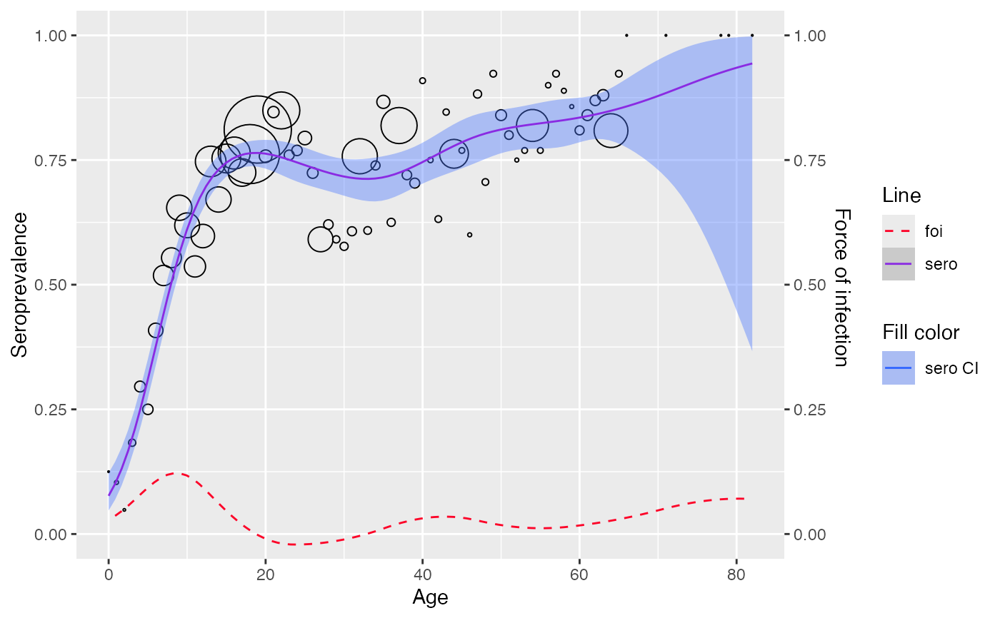

Fit age-specific seroprevalence to a semi-parametric model where predictor is modeled with penalized splines. The penalized splines can be estimated by either (1) penalized likelihood framework or (2) mixed model framework
Usage
penalized_spline_model(
data,
age_col = "age",
pos_col = "pos",
tot_col = "tot",
status_col = "status",
s = "bs",
link = "logit",
framework = "pl",
sm_p = NULL,
...
)Arguments
- data
the input data frame, must either have columns for `age`, `pos`, `tot` (for aggregated data) OR columns for `age`, `status` (for linelisting data)
- age_col
name of the `age` column (default age_col="age").
- pos_col
name of the `pos` column (default pos_col="pos").
- tot_col
name of the `tot` column (default tot_col="tot").
- status_col
name of the `status` column (default status_col="status").
- s
smoothing basis to use
- link
link function to use
- framework
which approach to fit the model ("pl" for penalized likelihood framework, "glmm" for generalized linear mixed model framework)
- sm_p
smoothing parameter
- ...
additional arguments to be passed to `gam()` or `gamm()` function that fits the model.
Value
a list of class penalized_spline_model with 6 attributes
- datatype
type of datatype used for model fitting (aggregated or linelisting)
- df
the dataframe used for fitting the model
- framework
either pl or glmm
- info
fitted "gam" model when framework is pl or "gamm" model when framework is glmm
- sp
seroprevalence
- foi
force of infection
- pars
list of other model specifications for model fit
Details
In the semi-parametric model, the predictor is formulated as a penalized spline with truncated power basis functions of degree \(p\) and fixed knots \(\kappa_1,\cdots, \kappa_k\) as followed
$$ \eta(a_i) = \beta_0 + \beta_1a_i + \cdots + \beta_p a_i^p + \Sigma_{k=1}^ku_k(a_i - \kappa_k)^p_+ $$
Where: $$ (a_i - \kappa_k)^p_+ = \begin{cases} 0, & a_i \le \kappa_k \\ (a_i - \kappa_k)^p, & a_i > \kappa_k \end{cases} $$
FOI can then be derived by
$$\hat{\lambda}(a_i) = [\hat{\beta_1} , 2\hat{\beta_2}a_i, \cdots, p \hat{\beta} a_i ^{p-1} + \Sigma^k_{k=1} p \hat{u}_k(a_i - \kappa_k)^{p-1}_+] \delta(\hat{\eta}(a_i)) $$
Where \(\delta(.)\) is determined by the link function used in the model
In matrix annotation, the mean structure model for \(\eta(a_i)\) becomes $$\eta = \textbf{X}\beta + \textbf{Zu}$$
Where \(\eta = [\eta(a_i) \cdots \eta(a_N) ]^T\), \(\beta = [\beta_0 \beta_1 \cdots \beta_p]^T\), and \(\textbf{u} = [u_1 u_2 \cdots u_k]^T\) are the regression coefficients with corresponding design matrices
$$ \textbf{X} = \begin{bmatrix} 1 & a_1 & a_1^2 & \cdots & a_1^p \\ 1 & a_2 & a_2^2 & \cdots & a_2^p \\ \vdots & \vdots & \vdots & \dots & \vdots \\ 1 & a_N & a_N^2 & \cdots & a_N^p \end{bmatrix}, \textbf{Z} = \begin{bmatrix} (a_1 - \kappa_1 )_+^p & (a_1 - \kappa_2 )_+^p & \dots & (a_1 - \kappa_k)_+^p \\ (a_2 - \kappa_1 )_+^p & (a_2 - \kappa_2 )_+^p & \dots & (a_2 - \kappa_k)_+^p \\ \vdots & \vdots & \dots & \vdots \\ (a_N - \kappa_1 )_+^p & (a_N - \kappa_2 )_+^p & \dots & (a_N - \kappa_k)_+^p \end{bmatrix} $$
Under penalized likelihood framework, the model is fitted by maximizing the following likelihood
$$ \phi^{-1}[y^T(\textbf{X}\beta + \textbf{Zu} ) - \textbf{1}^Tc(\textbf{X}\beta + \textbf{Zu} )] - \frac{1}{2}\lambda^2 \begin{bmatrix} \beta \\ \textbf{u} \end{bmatrix}^T D\begin{bmatrix} \beta \\ \textbf{u} \end{bmatrix} $$
Where:
\(X\beta + Zu\) is the predictor
\(D\) is a known semi-definite penalty matrix
\(y\) is the response vector
\(\mathbf{1}\) the unit vector, \(c(.)\) is determined by the link function used
\(\lambda\) is the smoothing parameter (larger values -> smoother curves)
\(\phi\) is the overdispersion parameter and equals 1 if there is no overdispersion
Under the mixed model framework, the model instead treats the coefficients \(\textbf{u}\) in the likelihood formulation as random effects with \(\textbf{u} \sim N(\textbf{0}, \mathbf{\sigma}^2_u \textbf{I})\)
Refer to section 8.1 and 8.2 of the the book by Hens et al. (2012) for further details.
References
Hens, Niel, Ziv Shkedy, Marc Aerts, Christel Faes, Pierre Van Damme, and Philippe Beutels. 2012. Modeling Infectious Disease Parameters Based on Serological and Social Contact Data: A Modern Statistical Perspective. tatistics for Biology and Health. Springer New York. doi:10.1007/978-1-4614-4072-7 .
Examples
data <- parvob19_be_2001_2003
data$status <- data$seropositive
model <- penalized_spline_model(data, framework="glmm")
#>
#> Maximum number of PQL iterations: 20
#> iteration 1
#> iteration 2
#> iteration 3
#> iteration 4
model$info$gam
#>
#> Family: binomial
#> Link function: logit
#>
#> Formula:
#> pos ~ s(age, bs = s, sp = sm_p)
#>
#> Estimated degrees of freedom:
#> 5.8 total = 6.8
#>
plot(model)
